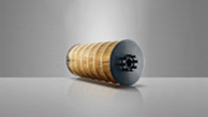
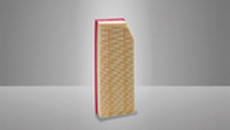
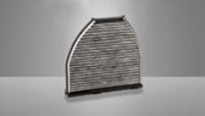
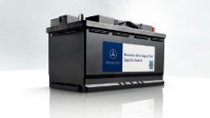
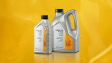

原厂配件
梅赛德斯-奔驰原厂配件，以品质助您安享驾驭
惬意之旅，亦是无忧之行。梅赛德斯-奔驰原厂配件，源于汽车发明者的品质保障，准确契合您的星徽座驾运转，让旅程更安心。更历经严苛测试以及层层质检，确保更换后驾乘体验焕然如初。
为何要用梅赛德斯-奔驰原厂配件
• 质量与安全的保证
梅赛德斯-奔驰原厂配件在交付使用前都经过严格的质检程序，以确保使用了这些配件的梅赛德斯-奔驰车辆能够安全可靠。
原厂配件会采用统一的一次性全息图封装，并享有24个月的保修期（易损耗零部件除外），当您有更换配件的需求时，请前往梅赛德斯-奔驰授权服务中心购买，以确保配件品质及行车安全。
• 迅速可靠的物流配送系统
梅赛德斯-奔驰在德国盖默斯海姆市(Germersheim)的全球物流中心运用先进的计算机技术，进行高效率的全球协调，以保证及时配送各种轿车配件至世界各地。
• 不使用梅赛德斯-奔驰原厂配件的风险
如果不使用梅赛德斯-奔驰原厂配件，可能产生因车辆经常抛锚和修理而造成的额外费用，不可避免的，也会威胁安全，并增加损坏车辆其他部件的风险。
保养件和易损件
梅赛德斯-奔驰原厂保养件、易损件的精良做工和优秀品质，是契合爱车精密运转的关键因素。因此，梅赛德斯-奔驰建议您：定期检查爱车的保养件和易损件，并及时更换原厂配件，可以使您的爱车处于良好性能状态。
原厂机油滤清器
机油滤清器的主要作用是过滤机油，保护发动机。长时间使用后，机油滤清器效能降低，增加机件磨损，甚至导致机械故障。梅赛德斯-奔驰原厂机油滤清器，具有如下优良特性：
• 高性能混合纤维材质滤纸，材质坚固，在强腐蚀、高压下有效过滤机油中的颗粒杂质
• 先进的制造工艺，保障滤芯尺寸与壳体精确匹配
• 耐高低温防腐蚀垫圈，高效密封

原厂空气滤清器
空气滤清器的主要作用是过滤空气中的灰尘等杂质，确保没有杂质进入发动机内，减少零件的磨损，从而延长发动机寿命。为了保证足够的清洁空气进入发动机系统，使车辆处于良好性能状态，请使用梅赛德斯-奔驰原厂空气滤清器。
• 高性能滤纸材质，有效过滤灰尘保障发动机高效运转
• 特殊防水处理，不受天气影响
• 采用特殊工艺的滤纸材质，以保障均匀的滤纸褶边间距，使滤清器更加稳定，防止变形

原厂空调滤清器
空调滤清器长期使用后，过滤效果会大大降低，其中的活性炭也不再具有吸附作用，且潮湿和污染的环境会加速空调滤清器的堵塞、过度饱和。梅赛德斯-奔驰原厂空调滤清器具备如下特性，让健康一路随行。
• 创新型纳米材料科技，有效过滤PM2.5
• 高效的活性炭层，有效吸收氮氧化物等有害气体
• 专利边框设计，安装便捷，不易因潮湿而变形失效

原厂雨刮片
夏季突如其来的暴雨，或是冬季扑面而来的风雪，使车外能见度迅速下降，视线瞬间受阻，威胁您的行车安全。梅赛德斯-奔驰原厂雨刮片品质优越，无惧冬夏挑战，亦或是雨雪突袭, 清晰视野指引一路安全。
• 恶劣条件下亦能保障出色的可靠性和清晰视野
• 采用高品质材料制成，拥有较长使用周期和低更换率
• 创新配备“保养提示器”功能，适时提醒更换雨刮片
• 与风挡玻璃严密贴合，工作安静无噪音

原厂制动盘
作为最重要且暴露程度最高的安全部件之一，制动盘的作用是与制动片相互摩擦共同产生制动力。制动盘的使用状况，将直接影响制动效果。为了保证您的驾驶安全，梅赛德斯-奔驰建议您：使用原厂制动盘，并在制动盘磨损到达极限前及时更换。
原厂制动盘特性：
• 经过多次的产品测试及严格的质量检测，与制动系统其他安全配件严密配合
• 大尺寸制动盘提供优良的制动力矩，提升安全系数
• 良好的抗热与抗水衰退性，抗裂与抗变形性及防腐蚀性
使用非原厂制动盘带来的安全隐患有哪些？
• 耐高温能力差，在高温条件下，制动力下降，使制动效果明显降低
• 在高强度的工作下，易出现裂纹，影响制动的稳定性
• 制造工艺差造成与制动片不均匀摩擦，产生刺耳的噪声，影响驾驶舒适性

原厂制动片
制动片是制动系统中最关键的安全配件之一。为了保证您的驾驶安全，梅赛德斯-奔驰建议您：使用原厂制动片，并在制动片磨损到达极限前及时更换。
原厂制动片特性：
• 经过多次的产品测试及严格的质量检测，与制动系统其他安全配件严密配合
• 材料的高摩擦系数保证充足的制动力，为车辆提供强大制动效能
• 耐高低温材料保障制动效果稳定
• 安全环保，不含损害健康的重金属
使用非原厂制动片带来的安全隐患有哪些？
• 材料摩擦系数过低，无法提供强大的制动力，严重影响制动效果
• 耐高低温能力差，在长时间制动后，由于温度过高，存在热衰退性
• 材料耐磨性差，造成频繁的更换，增加保养费用
原厂AGM蓄电池
想要您的爱车随时响应出行需求，确保驾乘安全舒适，您需要为爱车匹配一款可靠有保障的产品——梅赛德斯-奔驰原厂蓄电池。
原厂蓄电池是唯一经过梅赛德斯-奔驰严格的实验室测试和使用测试的蓄电池，并且符合梅赛德斯-奔驰高质量标准要求。AGM即吸液式玻璃纤维隔层蓄电池，是利用吸液式玻璃纤维代替传统蓄电池使用的强酸液体作为导电介质的蓄电池。梅赛德斯-奔驰原厂AGM蓄电池可强有力的支持奔驰车内大量电子设备和系统用电的需要，进而发挥出爱车良好性能，提升您的行车体验。
安全
相对于以强酸液体为导电介质的传统电池，AGM蓄电池的电解液通过毛细作用被保持在玻璃纤维隔层中，没有自由流动的酸液且完全密封。即使电池壳体被损坏，也不会泄漏酸液，降低安全风险，减少环境污染。
可靠
先进的过放电保护功能和稳定的启动能力，使AGM蓄电池在多种环境条件下都能为您的爱车提供可靠的电力。
高性能
得益于更好的材质和制造工艺，相比传统的铅酸蓄电池，AGM蓄电池提供更好的冷启动能力，以及更好的机械和化学稳定性，更适合于恶劣环境。AGM蓄电池较高的循环耐久性，对于配有大量电子设备或自动起停功能的车辆，将特别受益。
便捷
AGM蓄电池在其使用寿命中免维护。

发动机油
您知道吗？发动机是汽车的“心脏”，机油则是汽车的“血液”。如不及时更换机油，或使用劣质机油，容易造成发动机磨损，形成积碳，从而影响其使用寿命。因 此，选择高品质的机油至关重要。优质机油能使爱车的发动机零部件各尽其职，还能很大限度地降低污垢和积碳的堆积，有效减少发动机使用时所造成的磨损、 腐蚀等危害，以保护您的发动机正常运行。
梅赛德斯-奔驰建议您：选择5W-40原厂发动机油，以品质成就发动机的出色性能，让您的爱车响应出行需求。
5W-40原厂发动机油
梅赛德斯-奔驰发动机工程师精心研发而成的具备星徽品质的全合成机油，经过了严苛的实验和实车测试，与市场上普通适用型机油相比，它更有针对性，更能激发出奔驰发动机的潜能。梅赛德斯-奔驰原厂机油，它将与您的爱车发动机形成契合组合，免除您的后顾之忧。
- 高端品质，满足MB229.5 *标准
- 专属打造，准确契合发动机
- 高效环保，降低污染排放
- 原厂渠道，权威品质保障

AMG高性能发动机油
AMG高性能发动机油，由梅赛德斯-奔驰专为AMG高性能发动机打造，专业品质，保障运转。
• 0W-40全合成高性能机油，满足MB229.5*认证标准，优良润滑效果，高效持久保护
• 符合梅赛德斯-奔驰AMG发动机的高性能要求，同样适用于其他的梅赛德斯-奔驰汽油发动机
• 即使在恶劣环境下，依然能保证发动机的出色表现
• 有助于节省燃料和减少二氧化碳排放，满足梅赛德斯-奔驰严格环保标准

机油使用贴士
• 为什么要使用全合成发动机油？
机油的品质高低取决于基础油和添加剂，全合成机油的基础油全部是由化学工艺合成，由于其分子结构单一，性质更加稳定，可以有效减少摩擦，同时结合专门的添加剂配方，能使其具备更好的高低温性能，以及更长的换油周期，确保发动机在恶劣环境下依然表现出色。因此，梅赛德斯-奔驰建议您选择高品质的全合成发动机油，让您的爱车表现出色。
• 为什么要定期更换发动机油？
定期更换发动机油对您爱车的性能保养至关重要，若换油周期过长，会引起机油清洁性能的减弱，从而产生积碳和油泥，同时，机油添加剂的活性因子会因失效导致润滑性能的下降，造成发动机磨损，缩短发动机寿命。因此，梅赛德斯-奔驰建议您每一万公里或一年更换一次原厂发动机油，以保障您爱车的出色性能。

原厂认证轮胎
轮胎是汽车的重要部件之一，是汽车正常行驶中与路面的唯一接触，提供抓地力的同时也和汽车悬架共同来缓和汽车行驶时所受到的冲击。选择高品质轮胎，才能够确保您的爱车具有良好的乘座舒适性及行驶平顺性，并对行车安全起到至关重要的作用。
我们不仅对所生产的汽车有着超高的要求，更注重轮胎和整个车轮的质量。因此，我们在计划生产新车型之初就开始与知名的轮胎制造商密切合作，对轮胎进行严格的研发测试，直到它们能够适配车辆，以满足我们所有具挑战性的需求。这些经过我们严苛测试的高品质轮胎被称之为“梅赛德斯-奔驰原厂认证轮胎”（Mercedes Original）。
梅赛德斯-奔驰建议您选择原厂认证轮胎，尽享无忧旅途。
原厂认证轮胎
• 制动距离短，减小反应距离，有效保障行车安全；
• 即使在湿滑条件下，也可提供足够的抓地性能；
• 减振效果强，并且具有良好的高速行驶承受力，大幅度降低爆胎可能性；
• 低滚阻设计，有效降低了车胎噪音，并带来更好的燃油经济性；
• 为不同季节而定制的橡胶材料，适应不同季节湿度、温度，从而减少安全隐患；
• 高品质材料及制造工艺，具有耐磨损的特质；
• 适配梅赛德斯-奔驰汽车。
MO Extended低压续航轮胎
为给您带来更佳的行车体验，我们不断地升级着梅赛德斯-奔驰原厂认证轮胎的性能，因此诞生了MO Extended低压续航轮胎，其胎壁标识为“MO Extended”。它不仅具有梅赛德斯-奔驰原厂认证轮胎的独特品质，还可在气压突降的情况下，依靠其坚硬的胎壁支撑车辆使其继续以80 km/h的车速行驶长达80公里的路程，安全驶离危险区域（例如，高速公路、隧道、乡村公路）。除此之外，MO Extended低压续航轮胎的低磨损率也降低了其更换频率，有效节省用车成本。
原厂惠选配件
“梅赛德斯-奔驰原厂惠选配件”，英文全称“Mercedes-Benz Genuine Remanufactured Parts” ，是原厂再制造配件的市场沟通名称。上世纪开始，梅赛德斯-奔驰开启配件再制造，经过数十年的努力，梅赛德斯-奔驰已经拥有先进的技术和设备，成熟的再制造工艺和质量检测体系。梅赛德斯-奔驰原厂惠选配件都经过专业的生产流程，严苛的质量检测，以保证性能和质量达到梅赛德斯-奔驰的标准。至今，原厂惠选配件的销售网络已经覆盖全球200多个国家，产品种类超过2万种。
实惠与优质不可兼得？梅赛德斯-奔驰原厂惠选配是您安心之选。原厂惠选配件既可以保障配件的质量，跟您的爱车有着准确的匹配度，又可以提供更具吸引力的价格。
每个原厂惠选配件都经过严格的标准返回体系、精益求精的完整再制造过程，精密专业的检测流程，包含了拆解，清洗，测试，制造，重组和质量监控等多个步骤。不仅如此，原厂惠选配件还享受2年的质保期限。
我们同样珍视您的时间，配件供应至关重要。丰富的梅赛德斯-奔驰原厂惠选配件目前已拥有约2万种产品：从喷油嘴、空气流量计、起动机、空气减震器到完整的发动机和变速箱有供应。即使是已经停产的原厂配件，原厂惠选配件仍有供应。与梅赛德斯-奔驰原厂配件一样，您可以在梅赛德斯-奔驰授权经销商处快速、直接地获取原厂惠选配件，节省更多时间成本。
原厂惠选配件的生产过程每年可以节省数千吨原材料和几万兆瓦时的电量，大大降低了资源消耗量。
 心意所属，远行相伴
心意所属，远行相伴 限时购车新方案
限时购车新方案 查找经销商
查找经销商 金融计算器
金融计算器